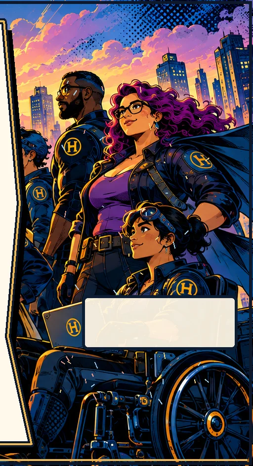

START HERE · FRAMEWORK GUIDE
The Mission Architect's Field Guide
Understand the five-step framework, see how Memory Meltdown puts it into practice, and sketch a quick first mission.
Download PDF (2 pages) ↓DEVLEARN 2026 · SESSION 606
Design for Engagement & Impact: Escape-Room-Style Learning Tied to Real Performance Tasks
Eight resources, four stages: plan, build, test, and make the learning stick. Choose a starting point or follow the whole mission.

01 / MISSION ARCHITECT TOOLKIT
Use this route as a guide, not a rigid sequence. The resources are standalone, and you can revisit any stage as your design evolves.
ALL EIGHT RESOURCES IN ONE FILE
One standard, bookmarked PDF containing the eight handouts in the order below, with a clickable contents page.
Identify the learning need, sketch an approach, and secure support before investing in an elaborate build.
START HERE · FRAMEWORK GUIDE
Understand the five-step framework, see how Memory Meltdown puts it into practice, and sketch a quick first mission.
Download PDF (2 pages) ↓WORKSHEET
Turn a performance need into a playable concept with success criteria, a prototype blueprint, and a feedback plan.
Download PDF (2 pages) ↓PLANNING TOOL
Make the case for a small, measurable pilot before committing to a larger build.
Download PDF (1 page) ↓Choose mechanics that require the target thinking, then create clues, physical pieces, and fair feedback.
IDEA LIBRARY
Explore 24 techniques, six hands-on reveal recipes, and checks for solvability, alignment, and access.
Download PDF (10 pages) ↓PROMPT LIBRARY
Four adaptable prompts for ideating, drafting, challenging, and refining puzzles, with human validation.
Download PDF (1 page) ↓Validate the puzzle and prepare for real participants, actual rooms, and the unexpected.
CHECKLIST
Check puzzle logic, learner decisions, instructions, accessibility, and shortcuts; record revisions and retest.
Download PDF (1 page) ↓PLANNER
Prepare the room, materials, staffing, timing, answer checks, contingencies, and inclusive participation.
Download PDF (1 page) ↓Debrief the decisions and check whether the reasoning transfers beyond the game.
FACILITATION GUIDE
Lead a focused five-minute debrief and check whether learners can apply the same reasoning to a new case.
Download PDF (2 pages) ↓02 / DESIGN FRAMEWORK
Start with performance. Make the thinking playable. Expand each step for a practical example and the output to produce.
In practice: For the fictional headquarters, the design need is identifying consequential emergencies amid distracting reports. In a real project, check observed work and causes first; a missing tool or unclear policy may not be a training problem.
Key moves: Spot the pattern · Gather evidence · Check the cause · Define the action
Your output: A specific practice-worthy behavior
In practice: Given six fictional incident reports and the supplied priority criteria, players select the three consequential threats, sequence them, and explain their choices. The answer key must support a defensible result.
Key moves: GIVEN · DO · STANDARD · SCORE IT
Your output: An observable objective + success criterion
In practice: Sorting and sequencing make players practice prioritization. The superhero rescue gives that decision urgency; it does not replace the decision with an unrelated code puzzle.
Key moves: Select mechanic(s) · Add narrative · Sketch the flow
Your output: A matched mechanic + meaningful story
In practice: Create six incident cards, a priority guide, a recovery board, and three correct-priority cards among plausible distractions. Verify the ordering and card-back self-check before a novice playtest.
Key moves: Required info · Create artifacts · Establish solution · Playtest everything
Your output: Playable artifacts + a verified solution
In practice: Matching card backs confirm the correct order. Add progressive hints, a time-up recovery route, and a brief debrief; check transfer with a new comparable set of requests.
Key moves: Debrief · Help · Update · Beyond
Your output: Hint guide + updated final materials + transfer ideas
Example note: the real Backup League Memory Meltdown chapter uses six incident reports, with three priority threats. The four-strip example in the Puzzle Mechanics guide is a separate construction illustration, not the live puzzle.
03 / PUZZLE TOOLBOX
Use the decision learners need to practice as your starting point. Sorting helps people prioritize; comparing evidence helps them investigate. A physical prop or secret message can make the result satisfying, but it should not let players bypass the reasoning.
| Learners need to… | Puzzle mechanic | DIY example |
|---|---|---|
| Prioritize risks | Sort / rank | Triage competing alerts |
| Follow a sequence | Order steps | Restore a process flow |
| Evaluate evidence | Deduction / logic | Reconcile conflicting reports |
| Apply constraints | Route / assemble | Configure safe equipment |
| Interpret information | Decode / overlay | Reveal meaningful data |
| Synthesize findings | Meta-puzzle | Combine chapter artifacts |
Challenge: What is at stake? Action: What meaningful decision must players make? Reward: What changes when they succeed?
This is a useful lens for designing each chapter: the action should require the skill you want learners to practice, and the reward should confirm the result rather than replace the thinking. Chapter rewards can then feed into a shared finale.
Explore Rachel Arpin's Challenge–Action–Reward framework (ATD, 2023) ↗
04 / PRACTICAL LOGISTICS
Imagine 50 attendees, 10 teams, fixed seating, and just one facilitator. The physical setup determines what will work. Prepacked, self-checking kits reduce queues; stations make more sense when movement itself is the learning goal and staffing allows it.
Rehearse the whole experience: packet distribution → team formation → access and sightlines → timer and help → shared ending → reset. In a fresh playtest, notice where players are confused by directions rather than challenged by the actual decision.
Download Logistics Planning (PDF) ↗ Download Playtesting & Puzzle Validation (PDF) ↗
05 / FURTHER READING
Two more useful references for planning measurable practice and checking the accessibility of interactive learning materials.
BONUS CONTENT · BEHIND THE SCENES
Every superhero team deserves an anthem, even the support crew keeping headquarters running. We Keep the Lights On was created with Suno AI as a victory song for The Backup League. It's one more example of how generative AI can help bring an immersive learning experience to life.
Listen to the full victory song on Suno ↗Suno may require a free account to listen to the entire song. The song plays on Suno, not on this website.
KEEP THE CONVERSATION GOING
I'd love to hear how you adapt these approaches to your own learners, teams, or tricky workplace problems.
START SMALL TEST EARLY DEBRIEF WITH PURPOSE